네트워크관리사-2급 (2022-11-06 기출문제)
1과목: TCP/IP
1. UDP 세션을 이용하여 네트워크를 관리하는데 사용되는 프로토콜은?
- CMIP
- SMTP
- SNMP
- TFTP
(정답률: 69%)

2. TCP(Transmission Control Protocol)에 대한 설명으로 옳지 않은 것은?
- 연결위주의 전송방식이다.
- 신뢰성 있는 전송방식이다.
- 능동적인 흐름제어기능을 가지고 있다.
- 일부 데이터가 손실되어도 치명적이지 않은 프로그램 등에 적합하다.
(정답률: 83%)
3. OSI 7 계층의 통신 계층별 PDU(Protocol Data Unit)의 명칭으로 올바른 것은 무엇인가?
- 7계층 : 세그먼트
- 4계층 : 패킷
- 3계층 : 비트
- 2계층 : 프레임
(정답률: 77%)
4. 동적 라우팅 프로토콜 중에 링크 상태(Link State) 라우팅 프로토콜은?
- RIP (Routing Information Protocol)
- EIGRP (Enhanced Interior Gateway Routing Protocol)
- OSPF (Open Shortest Path First)
- BGP (Border Gateway Protocol)
(정답률: 68%)
5. TCP/IP 계층 중 다른 계층에서 동작하는 것은?
- IP
- SMTP
- RARP
- ARP
(정답률: 79%)
6. 네트워크를 관리하는 Lee 사원은 사내에서 잦은 IP 충돌로 인하여 장애신고를 많이 받고 있어 기존 IP정책을 DHCP로 변경하려고 한다. 다음 중 DHCP를 적용해야 하는 장비로 가장 적합한 것은?
- 웹서버
- Access point
- 교육장용 PC
- 네트워크 프린터
(정답률: 70%)
7. 다음에서 설명하는 프로토콜은?
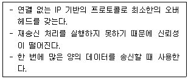
- UDP
- TCP
- ICMP
- ARP
(정답률: 85%)
8. ′B Class′를 6개의 네트워크로 구분하여 사용하고 싶을 때, 가장 적절한 서브넷 마스크 값은?
- 255.255.224.0
- 255.255.240.0
- 255.255.248.0
- 255.255.255.0
(정답률: 60%)
9. TCP/IP에서 Unicast의 의미는?
- 메시지가 한 호스트에서 다른 여러 호스트로 전송되는 패킷
- 메시지가 한 호스트에서 다른 한 호스트로 전송되는 패킷
- 메시지가 한 호스트에서 망상의 다른 모든 호스트로 전송되는 패킷
- 메시지가 한 호스트에서 망상의 특정 그룹 호스트들로 전송되는 패킷
(정답률: 77%)
10. TCP 헤더 중에서 에러 제어를 위한 필드는?
- Offset
- Checksum
- Source Port
- Sequence Number
(정답률: 84%)
11. IP 프로토콜에 관한 설명으로 올바른 것은?
- IP 프로토콜은 프로세서 간의 신뢰성 있는 통신기능을 수행한다.
- 네트워크계층에 속하는 프로토콜로 실제 패킷을 전달하는 역할을 한다.
- IP 프로토콜의 오류제어는 세그먼트의 오류감지기능과 오류정정 메커니즘을 포함한다.
- 흐름제어로는 주로 슬라이딩 윈도우 방식이 쓰인다.
(정답률: 55%)
12. 서브넷 마스크에 대한 설명으로 옳지 않은 것은?
- 서브네팅이란 주어진 IP 주소 범위를 필요에 따라서 여러 개의 서브넷으로 분리하는 작업이다.
- 서브넷 마스크를 이용하여 목적지 호스트가 동일한 네트워크상에 있는지 확인한다.
- 필요한 서브넷의 수를 고려하여 서브넷 마스크 값을 결정한다.
- 서브넷 마스크의 Network ID 필드는 0으로, Host ID 필드는 1로 채운다.
(정답률: 80%)
13. 다음 내용에서 설명하는 서버와 클라이언트 간에 사용되는 표준 프로토콜은 무엇인가?
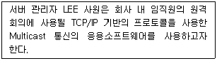
- SNMP
- ICMP
- CGMP
- IGMP
(정답률: 68%)
14. IPv4 환경에서 사용되는 사설 IP address에 대한 특징 중 올바르게 설명한 것은?
- B class 사설 IP address 범위는 172.16.0.0 ~ 172.32.0.0 이다.
- 공인 IP address의 부족 문제를 해결하기 위하여 사용된다.
- 회사 내 네트워크 구성할 때는 반드시 사설 IP address를 사용해야 한다.
- C class 사설 IP address 범위는 192.168.1.0 ~ 192.168.254.0 이다.
(정답률: 66%)
15. 다음 조건을 만족하는 tcpdump 명령어는 무엇인가?
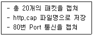
- tcpdump -c 20 -w http.cap port 80
- tcpdump -n 20 -w http.cap port 80
- tcpdump -c 20 -f http.cap port 80
- tcpdump -n 20 -f http.cap port 80
(정답률: 56%)
16. 다음은 라우터의 경로 결정 시 routing table을 참조하여 패킷을 전달하는 과정에 대한 설명이다. 올바른 것은?
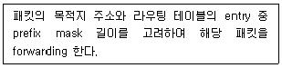
- Administrative distance (관리거리)
- Longest match rule (롱기스트 매치 룰)
- Next-hop address (넥스트홉 주소)
- Metric (메트릭)
(정답률: 48%)
17. (A) 안에 들어가는 용어 중 옳은 것은?
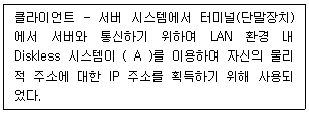
- ARP
- Proxy ARP
- Inverse ARP
- Reverse ARP
(정답률: 64%)
2과목: 네트워크 일반
18. (A) 안에 맞는 용어로 옳은 것은?
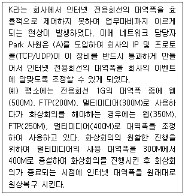
- QoS (Quality of Service)
- F/W (Fire Wall)
- IPS (Intrusion Prevention System)
- IDS ( Intrusion Detection System)
(정답률: 79%)
19. 다음 내용이 나타내는 매체 방식은?
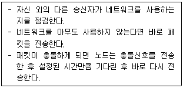
- Token Passing
- Demand Priority
- CSMA/CA
- CSMA/CD
(정답률: 67%)
20. 네트워크의 구성(Topology)에서 성형(Star)에 관한 설명으로 옳지 않은 것은?
- point-to-point 방식으로 회선을 연결한다.
- 단말장치의 추가와 제거가 쉽다.
- 하나의 단말장치가 고장나면 전체 통신망에 영향을 줄 수 있다.
- 각 단말 장치는 중앙 컴퓨터를 통하여 데이터를 교환한다.
(정답률: 75%)
21. 클라우드 컴퓨팅 서비스들 중 하나의 유형으로서 웹 브라우저를 통하여 소프트웨어를 제공하며, 서비스의 대상자는 주로 일반 소프트웨어 사용자인 것은?
- SaaS
- PaaS
- IaaS
- BPaas
(정답률: 70%)
22. 송신측에서 여러 개의 터미널이 하나의 통신 회선을 통하여 신호를 전송하고, 전송된 신호를 수신측에서 다시 여러 개의 신호로 분리하는 것은?
- Multiplexing
- MODEM
- DSU
- CODEC
(정답률: 79%)
23. 아래 내용에서 IPv6의 일반적인 특징만을 나열한 것은?
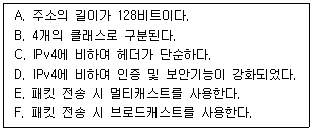
- A, B, C, D
- A, C, D, E
- B, C, D, E
- B, D, E, F
(정답률: 80%)
24. OSI 7 Layer에서 암호/복호, 인증, 압축 등의 기능이 수행되는 계층은?
- Transport Layer
- Datalink Layer
- Presentation Layer
- Application Layer
(정답률: 73%)
25. (A)안에 들어가는 용어 중 옳은 것은?
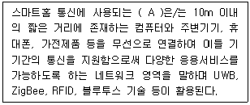
- WPAN
- LTE-M
- NB-IoT
- LAN
(정답률: 54%)
26. OSI 참조 모델에 대한 설명으로 옳은 것은?
- 전송계층은 네트워크 계층이 제공하는 서비스를 이용하고 세션 계층에 서비스를 제공한다.
- 각 계층은 상위 계층의 헤더를 제외한 데이터에 자신의 헤더를 붙여서 하위 계층으로 전송한다.
- 모든 계층에서 서비스 데이터 단위(Service Data Unit)에 헤더와 트레일러가 추가된다.
- OSI 참조 모델은 데이터처리 과정을 계층으로 구분하나 각 계층을 다른 계층과 독립적으로 설계할 수 없다.
(정답률: 52%)
27. (A) 안에 들어가는 용어 중 옳은 것은?
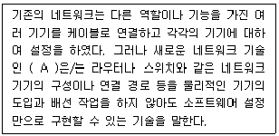
- PSDN
- Internet
- VPN
- SDN
(정답률: 43%)
3과목: NOS
28. 서버 담당자 Park 사원은 Windows Server 2016에서 기존의 폴더 또는 파일을 안전한 장소로 보관하기 위해 백업 기능을 사용하고자 한다. Windows Server 2016은 자체적으로 백업 기능을 제공해주기 때문에 별도의 외부 소프트웨어를 설치하지 않아도 백업 기능을 사용할 수 있다. 다음 중 Windows Server 백업을 실행하는 방법으로 올바르지 않은 것은?
- [시작] - [실행] - wbadmin.msc 명령을 실행
- [제어판] - [시스템 및 보안] - [관리도구] - [Windows Server 백업]
- [컴퓨터 관리] - [저장소] - [Windows Server 백업]
- [시작] - [실행] - diskpart 명령을 실행
(정답률: 70%)
29. 서버 담당자 Park 사원은 Windows Server 2016에서 Active Directory를 구축하여 관리의 편리성을 위해 그룹을 나누어 관리하고자 한다. 다음의 제시된 조건에 해당하는 그룹은 무엇인가?
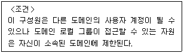
- Global Group
- Domain Local Group
- Universal Group
- Organizational Unit
(정답률: 74%)
30. Windows Server 2016의 DNS관리에서 아래 지문과 같은 DNS 설정 방식은?
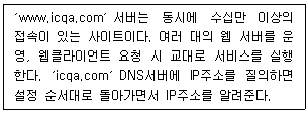
- 라운드 로빈
- 캐시플러그인
- 캐시서버
- AzureAutoScaling
(정답률: 78%)
31. Windows Server 2016의 DNS 서버에서 정방향 조회 영역 설정에서 SOA 레코드의 각 필드에 대한 설명으로 옳지 않은 것은?
- 일련번호 : 해당 영역 파일의 개정 번호다.
- 주 서버 : 해당 영역이 초기에 설정되는 서버다.
- 책임자 : 해당 영역을 관리하는 사람의 전자 메일 주소다. webmaster@icqa.or.kr 형식으로 기입한다.
- 새로 고침 간격 : 보조 서버에게 주 서버의 변경을 검사하기 전에 대기하는 시간이다.
(정답률: 68%)
32. Linux 시스템에서 상위 디렉터리에 있는 ′abc.txt′ 파일을 홈 디렉터리로 복사하고자 한다. 다음 중 알맞은 명령어는?
- cp ~/abc.txt ..
- cp ~/abc.txt /
- cp ../abc.txt /
- cp ../abc.txt ~
(정답률: 61%)
33. Linux의 VI편집기를 이용하여 파일의 내용을 수정할 때, 다음 내용을 만족하는 치환명령문은 무엇인가?
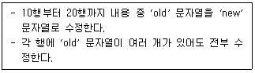
- :10,20s/old/new
- :10,20s/old/new/g
- :10,20r/old/new
- :10,20r/old/new/a
(정답률: 60%)
34. 서버 담당자 Park 사원은, Windows Server 2016에서 데이터 손실없이 여러 사이트 간에 동기 복제를 제공하며 장애가 발생하기 전에 백업 데이터로 연결을 넘길수 있도록 서버를 구성하고자 한다. 이에 적절한 서비스는?
- 저장소 복제
- DirectAccess Server
- 클라우드 폴더
- NanoServer
(정답률: 61%)
35. Linux에서 디렉터리를 삭제하는 명령어는?
- mkdir
- deldir
- rmdir
- pwd
(정답률: 77%)
36. Linux 시스템 부팅과 함께 자동으로 마운트되어야 할 항목과 옵션이 정의되어 있는 파일은?
- /etc/fstab
- /usr/local
- /mount/cdrom
- /home/public_html
(정답률: 61%)
37. Windows Server 2016에서 사용하는 PowerShell에 대한 설명으로 옳지 않은 것은?
- 기존 DOS 명령은 사용할 수 없다.
- 스크립트는 콘솔에서 대화형으로 사용될 수 있다.
- 스크립트는 텍스트로 구성된다.
- 대소문자를 구분하지 않는다.
(정답률: 67%)
38. Windows Server 2016의 DNS 구성은 정방향 조회 영역을 구성하고, DNS 조회 요구의 속도 증가와 문제 해결을 돕기 위한 역방향 조회 영역을 구성하고 있다. 호스트 이름에 인트라넷 서버의 IP Address를 매핑 하려 할 때, 역방향 조회 영역에서 각각의 인트라넷 서버에 대해 어떤 종류의 레코드를 생성해야 하는가?
- Host(A)
- Pointer(PTR)
- Start of Authority(SoA)
- Name Server(NS)
(정답률: 56%)
39. Linux에서 사용자가 현재 작업 중인 디렉터리의 경로를 절대경로 방식으로 보여주는 명령어는?
- cd
- man
- pwd
- cron
(정답률: 73%)
40. 서버 담당자 Park 사원은 Windows Server 2016에서 사용자 및 그룹을 관리하는 업무를 부여받았다. 다음 중 Windows Server 2016에 해당하는 그룹 계정 중 컴퓨터 자원에 대한 인증 속성을 관리하는 권한을 갖는 그룹은?
- Replicator
- Power Users
- Backup Operators
- Access Control Assistance Operators
(정답률: 59%)
41. Linux 시스템의 기본 명령어들이 포함되어 있는 디렉터리는?
- /dev
- /lib
- /bin
- /etc
(정답률: 64%)
42. Linux 시스템에서 기존에 설정된 crontab을 삭제하려고 할 때 올바른 명령어는?
- crontab –u
- crontab –e
- crontab –l
- crontab -r
(정답률: 70%)
43. Windows Server 2016에서 DNS 서버에 질의하여, ′icqa.or.kr′ 이름을 가진 호스트의 IP Address를 보여주는 명령어로 올바른 것은?
- netstat icqa.or.kr
- ipconfig /query icqa.or.kr
- dnslookup icqa.or.kr
- nslookup icqa.or.kr
(정답률: 68%)
44. 다음 (A)에 해당하는 것은?
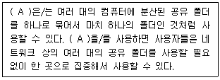
- 분산 파일 시스템
- 삼바(SAMBA)
- ODBC
- 파일 전송 프로토콜
(정답률: 71%)
45. Linux에서 유틸리티 설명 중 옳지 않은 것은?
- shell 변경 : chsh
- 빈파일 만들기 : touch
- 메모리 사용현황 : free
- 사용자 계정 삭제 : delete
(정답률: 65%)
4과목: 네트워크 운용기기
46. Hub가 사용하는 OSI 계층은?
- 물리 계층
- 세션 계층
- 트랜스포트 계층
- 애플리케이션 계층
(정답률: 77%)
47. RAID 시스템 중 한 드라이브에 기록되는 모든 데이터를 다른 드라이브에 복사해 놓는 방법으로 복구 능력을 제공하며, ′Mirroring′으로 불리는 것은?
- RAID 0
- RAID 1
- RAID 3
- RAID 4
(정답률: 72%)
48. 내부 통신에는 사설 IP 주소를 사용하고 외부와의 통신에는 공인 IP 주소를 사용할 수 있도록 하는 기술은?
- ARP
- NAT
- ICMP
- DHCP
(정답률: 80%)
49. 아래 지문이 설명하는 용어는 무엇인가?
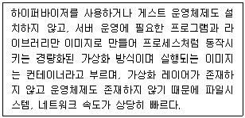
- VirtualBox
- Vmware
- Zen
- Docker
(정답률: 68%)
50. Repeater에 대한 설명으로 옳지 않은 것은?
- 전자기 또는 광학 전송 매체 상에서 신호를 수신하여 신호를 증폭한 후 다음 구간으로 재전송하는 장치를 말한다.
- 전자기장 확산이나 케이블 손실로 인한 신호 감쇠를 보상해 주기 때문에 여러 대의 Repeater를 써서 먼 거리까지 데이터를 전달하는 것이 가능하다.
- 근거리 통신망을 구성하는 세그먼트들을 확장하거나 서로 연결하는데 주로 사용한다.
- 네트워크를 확장하면서 충돌 도메인을 나누어 줄 수 있는 장비가 필요한데 이럴 때 Repeater를 사용하여 충돌 도메인을 나누어 네트워크의 성능을 향상시킨다.
(정답률: 61%)